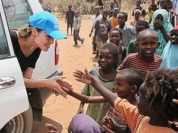

Importance of Helping hands
“HELP” is a very small word that has greater depths in it. Help can be small or big depending on the time it is been given or done. It always gives joy to help others. Help is something we may need at any time in our life. Parents help us to walk, talk and to know the world. Teachers help us to learn new things and to differentiate between good and bad. They guide us throughout our life. As we grow we should help each other in our needs that is why Mahatma Gandhi once said - The best way to find yourself is to lose yourself in the service of others.
Joy of helping:
A friend in need is a friend in deed. In school days, if we have lost our pen and someone lends their pen. They will automatically become our good friend. Helping actually builds good relationships, be it in family or society. When someone helps us we feel happy, but when we help others the joy we feel is incomparable. We should help our parents in every small way that we can. Helping old people cross the road will get us heartfelt blessings from them. Helping someone can never bring us any harm. If we help someone today someone else might help us when we are in need. Helping one another is the basic essence of life. If we see someone is hurt in an accident, it is our responsibility to help them. Spending few minutes of our time can save someone’s life. It can be a very small favour from our side, but for their critical situation that would be the greatest help. They would remember our help forever and they might too help others in future .It is like a chain of good deeds. No one can live alone, we live as community. Each one of us must help one another in our own little way to lead a happy and contented life. Anne Frank In her famous diary wrote - No one has even become poor by Giving. Sometimes we see, even animals go against their nature and help other animals. We being humans have the utmost duty to have humanity and help all beings. It is by caring and helping that we can see the Almighty. We need to spread the joy of helping.
Just Help And Change Your Life Forever
There were some researches in different countries in 2013 and the scientist found out, that the help can increase our life. It is possible to decrease the mortality by 22%. How much do you need to live longer? If you help the others up to 100 hours per year, you will reduce the risk of the death by 28%. But it does not matter how much time you spend while helping other people. You can do it 2 hours or 125- but you will get the positive result. The only main thing, which you need to know, that this help should be systematic. Another researches have shown, that students improved their blood tests only help each other 1 time a week and the positive aspects of this activity were shown after some years.

Improve your mood
We increase our mood when we help other people. The researches have shown, that it is needed to help people 5 times a week to improve your mood. But if you help only 1 time, it does not have any influence. You need to help people systematically and the researchers showed, that people, which help, do not suffer from depressions or decrease of motivation.
Little things have the great meaning
If you wish to help other people, just listen to their problems, but do not judge them. It is the easiest thing that can be done. A lot of people know the answers to their questions, but they have not realized it yet. When you allow them to speak about problems, to discuss it, you give them the great opportunity to check the situation from the other side and to find the best solution of it. Sometimes, they need help to start the new life from the very beginning. The essay on helping others will give you the great opportunity to understand it better. Just place the order on this site and you will get the essay as soon as it is possible. You can choose the time you wish.
Do not wait for “thank you”
You should not wait that all people will be thankful to you for your help. You should understand, that the help is not something like goods, which is possible to sell with benefits. We help each other just because we want to do in this way. Do you give the person the bill, because you explained how to go to the library, for example? Or should we stop giving some free advices and free help? It seems, that no one needs such kind of help, because it will not improve our life. But some kinds of help need to have some benefits. For example, we cannot work for free, because we need to earn money. Also, you need to understand, that before helping other people, you need to be ready to do it. It is clear, that there can be different kinds of help, everything depends on our possibilities. But people should be ready for this help. For example, little children cannot take care of someone or just to help, because they are not ready, they just need to grow up and to understand what does the help means. But adult people understood it and because of it, they can analyze their life and understand where it is possible to help the other people. If you wish to get some detailed information, it is possible to order essays on helping others on our site and you will get the informative essay on the given topic. Also, it is possible to get any other essay on your own theme. You can check them here on the site. We will be great to create the best essay for you. All of us can help other people and all can be the part of the mechanism, which can change our life and make it better. In any case, if you help other people, you become happier than you were before and you can be sure, that people will help you too.